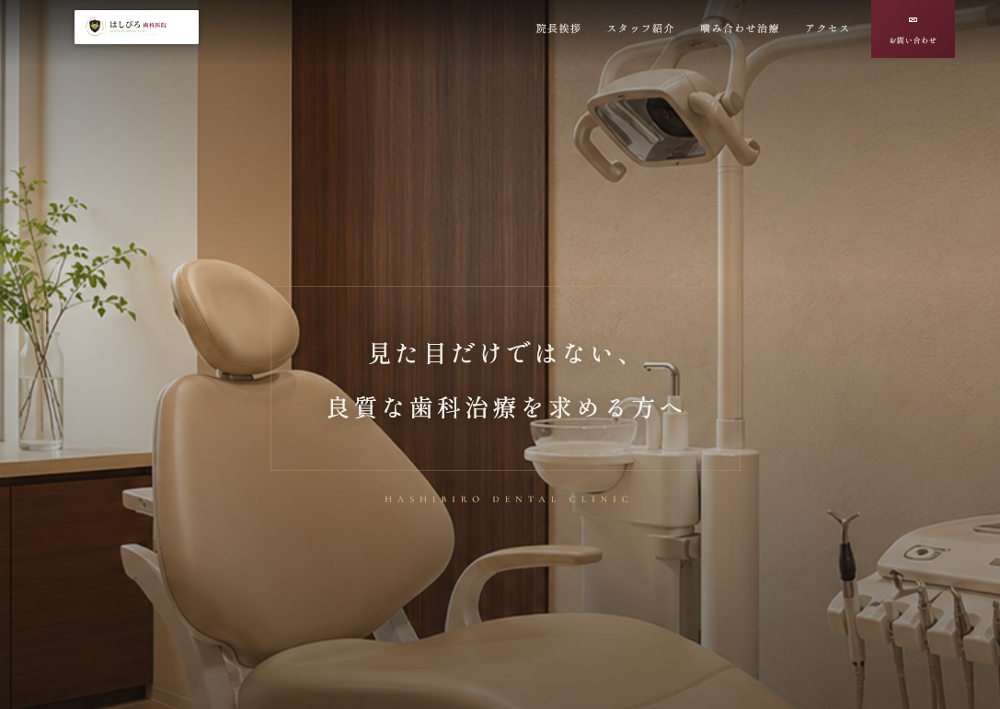

email: yokoyama.ryo8@gmail.com
WEB SITE
WEB SITE / DENTAL CLINIC

噛み合わせとインプラント治療に力を入れる「はしびろ歯科医院」のWebサイトを制作しました。専門性の高い治療内容を扱いながらも、患者さまが緊張せずに情報を読めるよう、落ち着いた写真と余白を活かした上質なデザインにまとめています。
課題
専門的な治療の信頼感を伝えつつ、症状に悩む方が自分に必要な情報へ迷わずたどり着ける構成が必要だった。
施策
症状別の入口、治療内容、院長挨拶、カウンセリングの順に情報を整理。各セクションから相談へつながる導線を配置した。
結果
医院の専門性と安心感を両立し、閲覧者が症状の理解から問い合わせまで自然に進めるレスポンシブサイトに仕上げた。
ブラウンとアイボリーを基調に、明朝体と大きな院内写真を組み合わせて、医療サイトに必要な清潔感と落ち着きを表現しました。症状別のカードを入口として配置し、治療名を知らない方でも悩みから情報を探せるようにしています。
PCとスマートフォンの両方で情報の優先順位が崩れないようレスポンシブ対応を行いました。スクロールに連動した表示演出、モバイルメニュー、ページトップ導線を実装し、長いページでも現在地を見失いにくい操作感を意識しています。